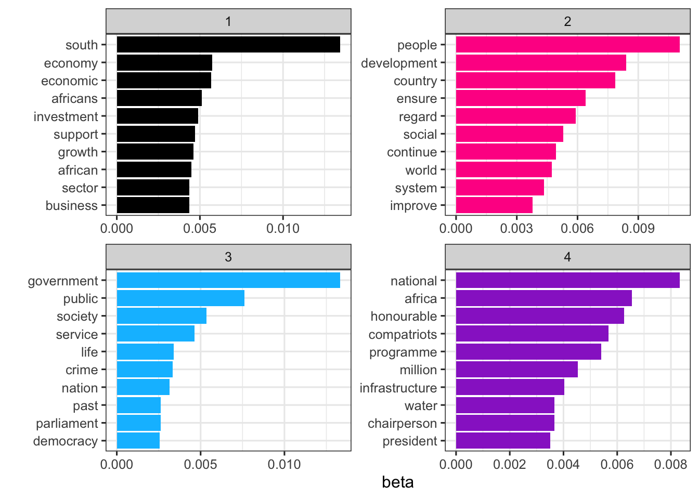
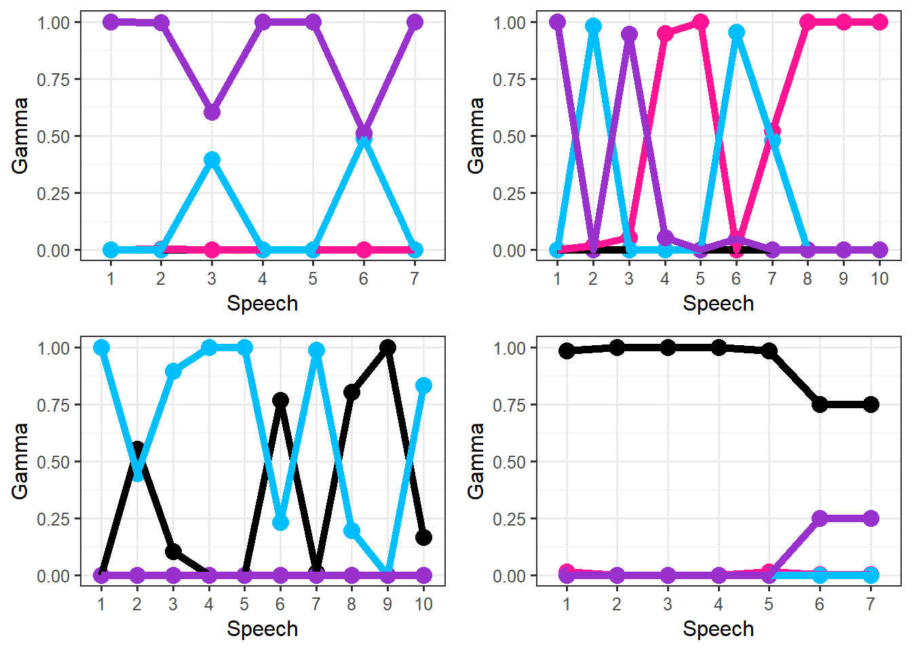

Assignment 2: Report
Abstract
Due to the large volume of text data available today, sentiment analysis and topic modelling have become popular methods to classify documents (or other pieces of text) based on their emotional content and topics or themes present. Sentiment analysis and topic modelling methods provide techniques to programmatically categorize documents and does not require individuals to sit and read through large documents. In this report, sentiment analysis and topic modelling is applied to State of the Nation Addresses in South Africa between 1994 and 2023. The sentiment analysis section allows one to identify different presidents sentiment conveyed in their speeches and how this changed over time. Topic modelling highlights what the major themes are that each president speaks about and if the proportion of time spent on each topic changes over time. The results of the sentiment analysis showed that on the whole South African presidents have a net positive sentiment in their speeches. Specifically Mandela and Mbeki became more positive in their speeches over the time of their presidency while Zuma and Ramaphosa become less positive during their time in office. These findings correlate with what was happening in South Africa at the times of their respective presidencies. Topic modelling extracted four key topics or themes which were given the following labels: Economic Growth, Social Development, Public Governance and Politics and Administration. The four topics were tracked over time for each president and results show how different presidents’ different speeches contained varying levels of each of these four topics.
Introduction
The aim of this assignment is to provide a descriptive analysis of the State of the Nation speeches in South Africa between 1994 and 2022. This descriptive analysis is performed using sentiment analysis and topic modelling. Sentiment analysis aims to describe the content of text in terms of its ‘emotions’ (Silge & Robinson, 2017). The purpose of performing sentiment analysis on these speeches is to identify the overall tone or emotion of the speech and identify how this might change over time or as presidents change. Topic modelling is a technique that aims to summarize text, in this case speeches, in terms of a number of topics. It is a way of categorizing speeches into different topics and identifying the main themes of a body of text (Silge & Robinson, 2017. This is of interest in order to identify what topics or themes are important in the context of the government of South Africa and how these themes or main topics may change over time or over different presidents.
Before the analysis is applied to the data a brief literature review will be given. Following this the data and any cleaning that was done will be discussed. The methods for performing sentiment analysis and topic modelling will be outlined. Finally the results of the analysis on the SONA speeches data will be presented and discussed.
Chat GPT was used as an aid to this assignment. The purpose of this was to experiment large language models and to assess Chat GPT’s ability to assist with the assignment. A brief summary of how well it did and how it responded to different prompts and guides in given in Use of ChatGPT appendix (which can be found on Use of ChatGPT tab of this website).
Literature Review
Sentiment Analysis
Sentiment analysis is a technique to programmatically asses the emotional content of a text (Silge & Robinson, 2017). It gives a way, through the use of sentiment lexicons to understand the attitudes and opinions expressed in a piece of text or speech and identify if they are positive or negstive (Silge & Robinson, 2017). Sentiment analysis can also be seen as a classification method as it classifies documents into positive or negative categories or more sophiscated classes such as joy, disgust or anger, depending on which specific sentiment lexicon one is using in the analysis (Medhat et al., 2014). Due to the large amount of text data around today, sentiment analysis is becoming more popular and necessary in order to classify documents and arrange them in terms of sentiment because the volume is too large for documents to be manually sifted through by people to decide on its emotional contents (Medhat et al., 2014). There are a number of application areas for sentiment analysis including customer feedback and reviews, social media monitoring, market research and political analysis. In the context of the SONA data the sentiment analysis can be seen as a form of political analysis and also a way in which to describe how the country is doing in terms of governance and economy of the years from 1994 to 2023.
Topic Modelling
Topic Modelling is a unsupervised classification technique for grouping documents according to topic or theme (Silge & Robinson, 2017). The particular topic modelling method that is popular is Latent Dirichlet Allocation (Silge & Robinson, 2017). The key ideas of this method is to consider documents as a collection of topics and topics as a collection of words (Silge & Robinson, 2017). Topic modelling thus allows one to categorize documents into broad themes and calculate the proportions of each topic or theme that appear in a document. Topic modelling has been done on SONA speeches before by Miranda and Bringula (2021) who analysed the State of the Nation Addresses in the Phillipines. Through the use of Latent Dirichlet Allocation, they were able to identify three major topics each linked with concerns within the country (Miranda & Bringula, 2021). In general one is able to pull out and label a topic by looking at the sentences that contain the words in that topic. This however needs to be discussed and consensus reached on what labels best represents the topic (Miranda & Bringula, 2021). This gives an indication that selecting the labels for topics is not always easy and may in some instances not represent perfectly the true underlying topic picked up by the LDA analysis.
Data
As mentioned, the data for this analysis is a collection of 36 speeches delivered as State of the Nation Addresses between 1994 and 2022. These speeches were delivered by 6 different presidents: de Klerk, Mandela, Mbeki, Motlanthe, Zuma and Ramaphosa.
This data needed to be cleaned before sentiment analysis or topic modelling could be done. The data was cleaned by removing punctuation marks and numbers from the speeches. Stop words, which are common words such as ‘the’, ‘and’ and ‘they’ were also removed from the speeches.
In order to perform sentiment analysis the speeches needed to be tokenized into shorter parts such as bigrams and words in order to assess the sentiment of each smaller part and then aggregate these sentiments to understand the sentiment of the speech as a whole. The speeches are tokenized first into sentences and then into words using the unnest_tokens() function in R.
A separate analysis is done on bigrams in order to consider negation of words, for example ‘improvement’ vs ‘no improvement’, and to assess how frequently negation occurred. In order to perform this analysis the unnest_tokens() function was also done specifying the token argument to ‘ngrams’ and setting ‘n’ to 2. The same cleaning was done in order to remove numbers and punctuation marks before the speeches were tokenized in this way. In terms of stop word removal, stop words were removed except for those stop words that are negation words. The qdapDictionary::negation.words dictionary was used to identify negation words and remove them from the stop words before removing stop words from the analysis.
For topic modelling, for which Latent Dirichlet allocation will be applied, the data format that will be used is a DocumentTermMatrix object. Once the speeches have been tokenized and cleaned, as was done above, a DTM object is created using the cast_dtm() function which is part of the tidytext package in R. The cast_dtm() function is applied to the data frame containing the words, speechIDs and counts and turns the data frame into a DTM object using these variables.
Methods
Sentiment Analysis
In order to perform sentiment analysis, sentiment lexicons are used. These lexicons contain many words which are labelled according to their sentiment. The main lexicon that was made use of here for analysis was the bing dictionary which labels words as positive or negative. The affin dictionary gives each word a score between negative five and five, from negative to positive sentiments.
In order to get each words sentiment, the data frame containing individual words, with an associated president, year ans sentence ID is left joined with the bing lexicon in order to get their associated positive or negative sentiment. Because many of the words in the speeches are not in the dictionary, these words are assigned with a sentiment value of neutral instead of removing them from analysis. This is not an ideal situation as it may mean that words which are very emotively loaded are being assigned as neutral and so one could miss the true sentiment of a sentence or speech however it is better than removing all these words from the analysis completely.
In order to analyze the sentiment of different presidents we can consider each presidents most commonly used positive and negative words which can be found using filtering by president and filtering by positive or negative sentiment.
In addition one can consider how sentiment changes over time and by president by considering the number of positive and negative sentiment associated words and seeing how this changes over time. This can also be done using the filter() function and filtering by year. In this way one can see if the percentage of positive sentiment in a speech increased or decreased as well as identify the net sentiment of the SONA speeches over time.
Sentiment analysis, with unigram tokens, can effectively capture the sentiment associated with a word. However, there are instances where negation words precede these sentiments. Negation words are words that reverse the sentiment of a succeeding word in sentiment analysis, essentially reversing its polarity (AlGhamdi, 2022). In unigram-based sentiment analysis, it becomes necessary to account for this reversal in sentiment when negation words are present. Bigrams, which are pairs of consecutive words, prove to be valuable in investigating this phenomenon. Analyzing negation in conjunction with unigram sentiment helps assess whether some positive or negative sentiments might be incorrectly classified and whether the most frequently used positive/negative words truly represent a polar sentiment to the realization discussed.
The negation words used here have been drawn from the dictionary provided by (Rinker, T. W., 2013). It’s important to note that this list of negation words is not exhaustive, and this limitation could affect the outcomes of the analysis.
To facilitate this process, the text was tokenized into bigrams. Following this, the words were separated, which allowed for the removal of stop words from the text. Negation words were collected, to handle contractions within some of these negation words, apostrophes were removed. Given that many negation words were found among the stop words, these negation terms were excluded from the stop word dictionary. Subsequently, the stop words were filtered out from the bigrams, resulting in a filtered dataset used for the analysis of bigram sentiment.
In cases where a bigram contained a negation word as the first of the two words, the sentiment was reversed. Afterward, an overall sentiment score was computed for each bigram to determine the sentiment associated with it.
Topic Modelling
The second technique used to analyze the State of the Nation Addresses is topic modelling for which Latent Dirichlet allocation is used. The basic components of Latent Dirichlet Allocation (LDA) are as follows:
Each document (in this case speech) is made up of a mixture of topics.
Each topic is made up of a mixture of words.
If one wanted to generate a speech, first the number of words to generate must be specified. Following that one makes a draw from a Dirichlet distribution which gives a vector of proportions of each topic in the document. Then one divides up the number of words between the topics in the proportions specified. The words are then drawn from a conditional distribution which gives the probability of word i appearing given that the topic is topic j. LDA is therefore a hierarchical model, sampling first the topic proportions and then sampling the words given the topic proportions.
The topicmodels package is used in R in order to perform LDA on the SONA data using the LDA() function. A seed of 2023 is set within the LDA control argument in order to ensure results are reproducible. The LDA() function takes in as arguments the DocumentTermMatrix of the speeches, as discussed in the data section and a parameter k which specifies the number of topics one wants to obtain.
In terms of selecting the number of topics to look for, this has to be specified in the LDA() function when it is run. Miranda and Bringula (2021) selected three topics in analyzing the Philippines SONA speeches. For this analysis: two, three and four topics were considered. A few of the different results for these different numbers of topics will be presented in the results. It was found that four topics was best and were easiest to categorize into understandable labels. For this reason the majority of topic modelling results presented below are based on the four topic case.
It was found that in many cases the same words were appearing in many topics, particularly more common words like ‘government’, ‘africa’ and ‘people’. In order to make the individual topics more meaningful these repeated words were set to only be allowed to be within one topic. This helped make the topics more unique so that better topic labels could be identified for each.
Results and Discussion
Having outlined the methods used to perform sentiment analysis and topic modelling, the results and analysis of the speeches is now given.
Sentiment Analysis
Individual Words
Figure 1 below shows the most common positive words used by each president. A number of words stand out here. “Regard” is used very frequently by Mandela, Mbeki and Motlanthe while Zuma and Ramaphosa both say “support” often. Mandela and de Klerk’s most common words are similar in terms of theme, examples being “freedom”, “peaceful” and “reconciliation”. These types of positive words are expected from these two presidents who were in office at the end of apartheid in South Africa.
It can also be noted that Ramaphosa and Zuma share similar positive words including “reform”, “improve”, “sustainable” and “progress” which indicates where much of their positive focus lies introducing new reforms or advocating for economic improvements and sustainable economic policy.
Figure 1: The most commonly used positive words used by each president.
Figure 2 below shows the most frequently used negative word by each president. Again here, as with the positive sentiment words, a couple words stand out which can highlight what the major issues at the time of each presidency. For Mbeki and Motlanthe, the most common negative sentiment word is poverty which indicates that that was a large problem at the time of their presidency or a negative aspect of the country that was focused on significantly in their speeches. Ramaphosa and Zuma use “corruption” many times in their speeches and this again points to what was regarded by them as a major negative issue to be addresses. In addition to corruption they both also speak of crime and poverty fairly frequently.

Figure 2: The most commonly used negative words used by each president.
Having considered overall the most commonly used positive and negative words by each president which gives an idea of what the positive and negative issues of the country were at the time, sentiment changes over time are now considered. Figure A and B in Appendix 1 give the changes in positive and negative sentiment associated words over time. Figure 3 below gives the net change in sentiment overtime, where each president is represented by a different symbol shown in the legend. This net sentiment shows the net positive sentiments over negative sentiments. It is clear that overall most presidents have net positive speeches, using more positive than negative words. An exception to this is de Klerk where the value is just less than zero indicating more negative words than positive ones were said and Mandela’s 1998 speech had an almost equal amount of negative and positive words. It must again be noted that those words not present in the bing dictionary were set as neutral and so there may be words that would slightly change these net sentiment values.
Mbeki and Ramaphosa stand out as having the highest net positive sentiment. Between 2003 and 2005 the SONA speeches were significantly more positive than negative during Mbeki’s presidency. Ramaphosa’s 2019 State of the Nation address also has a high net positive value. This was the year that Ramaphosa was elected as president and before the start of the COVID-19 pandemic and so it makes intuitive sense that this specific speech of Ramaphosa’s was the largest in net positive sentiment as it was likely a hopeful speech talking about change that would come after Zuma’s presidency and attempted impeachment.
The speeches from 2020 to 2023 decreased significantly in net positive sentiment which makes sense due to the COVID-19 pandemic and its economic impact on the country. However overall these SONA speeches were still overall positive than negative but not as positive as Ramaphosa first official SONA as president (2019).

Figure 3: Net positive sentiment in speeches over the years.
Figure 4 below gives the change in net positive sentiment over each of the presidents terms in office. For de Klerk and Motlanthe this is not applicable because they each only delivered one address. Mandela and Mbeki became increasing positive in their speeches over their presidencies which Zuma and Ramaphosa delivered speeches that were less and less positive. It is expected that Mandela and Mbeki would have become increasingly more positive as their presidencies covered a time in which democracy was new in South Africa and significant changes made in government from the apartheid era which increased positive sentiment in the country. In the case of Zuma a decrease in positive sentiment makes sense as particularly toward the end of his presidency he was facing numerous allegations of corruption which likely would have impacted his speech sentiment. As already mentioned the second year of Ramaphosa’s presidency saw the start of the pandemic which would have decreased the amount of positive sentiment in his speeches.

Figure 4: Change in Net Positive Sentiment between first and last speech, for each president.
Bigrams
The bigram sentiment analysis results are now presented and discussed. Three bigram sets are shown here, those that convey positive sentiment, those that convey negative sentiment and bigrams containing negated words.
In Figure 5, each president seems to have a number of repeating phrases that are meant to convey positive sentiment. These all seem to be rather unique to each individual. Both president’s Ramaphosa and Zuma speak upon land reform, a very polarising topic dependent on who is asked. For those who have suffered the backlash of Apartheid, land reform is a very positive sentiment, however, for many who own land, land reform is a very negative sentiment. However, it is undestandable that this has been given a positive sentiment overall as the word reform means to improve upon.
Although these are supposed to be the presidents’ positive sentiments, characters like de Klerk and Zuma do not subjectively convey a lot of positivity. Their statements are rather neutral. Their positive sentiment cannot be translated well. This may be a result of there possibly not being many positive items that they could have hoped to address. The bing dictionary may also not be a good dictionary for these two. De Klerk did, however, have a lot of positive sentiment about the freedom alliance.
Ramaphosa’s positive sentiment seems to be very hopeful. He talks about plans, progress and steps forward. These ideas are indicative of a process or belief of a process to betterment. Mandela’s positive sentiment worked around ideas of humanity. The reconcilliation commission, national unity, human dignity and affirmative action are all ideas that were professed in hopes of establishing a cooperative and friendlier social environment. Mbeki was very focused on the improvement of the country’s economic status. Most of his positive sentiment includes words that invoke the idea of an increasing economy.

Figure 5: The most commonly used positive bigrams used by each president.
In Figure 6, each president seems to have a number of repeating phrases that are meant to convey negative sentiment. Both Motlanthe and Mbeki happen to have very similar ideas in terms of their negative sentiment bigrams. This is understandable as Motlanthe took office after the resignation of Mbeki. It seems by looking at these plots of negative sentiment that these two presidents were dealing with crime and poverty.
Some of these sentiments in the negative plot are in fact quite positive and this shows a limitation of sentiment analysis. This shows how not every negation can be accounted for. For example, bigrams like criminal justice, poverty alleviation and anti corruption, have been shown to hold a negative meaning. These bigrams however have positive connotations. Anti corruption is the fight against something quite bad, that is corruption; criminal justice is the fight against crime; poverty alleviation is the mitigation of poverty. All these sentiments have been categorized as negative where in fact their meaning is quite positive. Such a realization puts into context some limitations that come about from the use of dictionaries that may have value some of these positive or negative as neutral, or not valued them at all. A similar limitation can be seen looking at Motlanthe and de Klerk with phrases such as ‘metric poverty’ and ‘hard negotiations’ being classified as negative when these may be neutral terms stating facts.
During Zuma’s presidency, the negative sentiment that was expressed was undeniably negative. It seemed to be a period had greater amounts of corruption as the word corruption appears frquently in the bigrams. Apart from the attempt to combat corruption, the sentiment in Zuma’s speeches does not seem to have any double meaning. The speaker seems to speak on the financial and economic crisis present in the country at the time.
Ramaphosa’s negative sentiment is rather ambiguous. It is clear that at this time a very frequent topic was railways, employment, corruption and equality. The word rail has been given negative sentiment while it’s accompanying words are either neutral or not defined in the bing dicitonary. It may not exactly be accurate to say that this rail is a negative sentiment. That along with critical skill and critical role, demonstrates that Ramaphosa’s negative bigram sentiments were not able to capture the true meaning behind his statements.

Figure 6: The most commonly used negative bigrams used by each president.
Figure C, D and E in the Appendix show the use of negations in bigrams to identify if any positive words are frequently negated. It can be seen that negation words do appear frequently in these speeches or in front of other words. This is an important observation particularly for the positive individual words identified above. The fact that the negation of these positives happens infrequently indicates that on the whole the positive words identified are used within a positive context and are not negated.
Topic Modelling
Having considered the sentiment analysis results of each speech, the topic modelling results are now presented.
As mentioned in the methods section, in order to specify an LDA model, one has to specify the number of topics one could expect to see in a document. Having selected this number of topics, the LDA will produces two outputs beta, \(\beta\), and gamma, \(\gamma\). Where \(\beta\) is a parameter that gives the probability of a topic generating a particular word and \(\gamma\) gives the proportions of topics in a document .
We first look into the \(\beta\)’s, the word-topic probabilities. To find a decent number of topics we ran 2, 3 and 4 topics in the LDA function and found that 4 topics gives the best result of the option. Both 2 and 3 topics had topics that had almost the same words as well as words with very similar meanings or themes. Although it is possible for topics to share some terms and meaning, the similarity of terms between topics was so great that it was difficult to distinguish the topics at all. When 4 topics were used, there were much clearer distinctions between the topics which can be seen in Figure 7.
In Figure 7, it can be seen that although there still remains some common terms, such as ‘africa’ and ‘african’, between some of the topics, majority of the words are unique to their topic. The words in each of the four topics seem to infer a potential idea or theme for each. Table 1 below gives the four topics along with their key words and sentences in which these words appear to help derive a meaningful label for each topic. This table may aid in demonstrating the meaning of each topic.
Topic 1 contains words related to economic growth. This can be seen in how words like economy, investment, support, growth, sector and business fall into this topic. These are terms that are associated with economic behaviour and business.
Topic 2 contains words related to social development. This can be seen with the inclusion of words such as people, development, ensure, regard, social and system. These words are related to social behaviour and the sentences containing these word speak about ‘social development’ and ‘community workers’.
Topic 3 contains words related to public governance / government policy. This can be seen in the inclusion of words like government, public, service, nation, parliament and democracy. These are all aspects that are related to government involvement. Associated sentences to these words include ideas around government taking action and implementing programmes.
Topic 4 contains words associated with ideas related to politics and administration. This topic is rather ambiguous, which resulted in it taking on two main ideas. On the side of politics there are words like national, Africa, honourable, president and chairperson. Some sentences associated with these words demonstrate a sense of pride and contain an encouragement to support political leaders. On the side of administration there are words like programme, million, infrastructure and water. Associated sentences refer to the work that needs to be done in terms of infrastructure in the country and some of the plans of government to implement changes in this regard.

Figure 7: Top 10 Terms in each Topic by word-topic probability.
Table 1: Example sentences to aid in depicting the meaning of topics
| Topic | Label | Words | Sentences |
|---|---|---|---|
| 1 | Economic Growth | Economy, Investment, Growth, Business | “The crisis cost our economy about 900 000 jobs.” “To ensure the promotion of an inclusive economy, to aid growth and development…” “As part of our efforts to encourage greater economic growth, we are working to reduce the cost to communicate.” |
| 2 | Social Development | People, Development, Social, Improve | “We must sustain and improve the effectiveness of our social development programmes…” “The government will create a public service echelon of multi-skilled community development workers…” |
| 3 | Public Governance | Government, Public, Service, Democracy | “That will provide an opportunity to address the more detailed issues on the government’s programme … that will support the government’s actions as our country begins its second decade of democracy.” “In particular we have decided that this year the government itself, in all its spheres, and the public sector as a whole, must make a decisive and integrated contribution…” |
| 4 | Politics and Administration | National, Compatriots, President, Infrastructure | “Compatriots and esteemed guests, local government must work.” “We dare not allow any minority to deprive the great majority South Africans of their long-awaited desire to elect national and provincial governments which will for the first time in our history be truly representative of all South Africans.” “Over the next few years, there will be a dramatic expansion … for water, land care, municipal infrastructure...” |
Having considered the word-topic probabilities, the document-topic probabilities, \(\gamma\)’s, can now be considered which will give an indication of how much each president spoke about the four topics and if and how this changes over time. As mentioned previously the document-topic probabilities describe each document as a mixture of topics. It is helpful to analyze the proportions of a topic present in the document to understand the main theme of each speech and identify which topics were of most importance to each president.
In Figure 8, these \(\gamma\)’s are captured across the speeches allowing the visualization of trend in topic over time for each president. This would aid in identifying what the general idea of the speech at a given time was. The speeches given by de Klerk and Motlanthe are not in this plot because they each only gave one speech so changes over time cannot be considered.
Mandela’s speeches was very focused on ideas of politics and admin. This makes sense as this was a period of transformation in government. Policy and administration were two very important points that needed to be tackled to escape the previously oppressive and hateful era. This emphasis on protecting the new government structure and politics is further reflected in how the topics of public governance are also strongly occurring topics in his speeches. Interesting the economic growth topic does not appear here. This shows a limitation of this analysis, because while Mandela may not have spoken about economic growth as much as later presidents, it definitely would have been part of his speeches and so should have been more present here.
The plot for Mbeki shows a much larger amount of change in topics between different speeches. In each of his speeches the dominating topic seems to shift. In his first and third speeches he seems to talk on politics and administration. In his second and sixth speech his dominating topic is that of social development. His fifth, eighth and nineth speeches deal with government policy. His fourth and seventh speech have a combination of ideas these different topics. In his last years of presidency, the main theme of his speeches was that of social development.
Zuma’s speeches revolve around two topics, economic growth and government policy. The plot shows that most of his speeches changed between having one of these two topics as his main theme and they often switched in terms of which was more important over consecutive years.
Almost every speech that Ramaphosa has given strongly deals with the topics of economic growth, this is shown in the dominating document-topic probabilities of the topic over all of Ramphosa’s speeches. This makes intuitive sense as much of Ramaphosa’s presidency has been during the COVID-19 pandemic which had a large negative impact on the economy, thus requiring a need for economic growth and stimulation in the country. In his last two speeches it would seem that he gave more attention to politics and administration, while still focusing heavily on economic growth.
Topic Modelling use Latent Dirichlet Allocation has allowed for four key themes to be picked up in the SONA data from 1994 to 2023. These key topics have been outlined and have been able to be tracked over time. As mentioned there are some limitation in this analysis which include the fact that some topics contain words that convey similar meaning to word in other topics. This makes it challenging to identify labels and the labels identified here may not be exactly in line with what the true underlying topic may have been. Despite this, topic modelling gives one the ability to identify possible themes in each speech without requiring one to have listened to or read the whole speech. This makes topic modelling, and specifically LDA, a useful method as it automates the analysis of large volumes of text data.

Figure 8: The trend in topic over time for each president’s speeches.
Conclusion
This report has outlined a descriptive analysis of the State of the Nation speeches in South Africa between 1994 and 2023. This descriptive analysis was carried out by implementing sentiment analysis and topic modelling on the speech data. This analysis has highlighted the importance of being able to manipulate and wrangle text data in order to convert it into useful formats. In addition it has shown how both sentiment analysis and topic modelling are useful tools to extract meaning from text data without having to read through the full speeches. The sentiment analysis showed the positive or negative sentiments of each president and described how these sentiments changed over time. Significant increases or decreases in positive sentiment were also able to be noted. The topic modelling technique pulled out four topics that the presidents conveyed in their speeches. These topics were able to be tracked over time for each president which gave insight into which topics different presidents thought were more or less important to speak about. There are some limitations to the analysis that has been done such as the lack of certain words in the sentiment lexicons and assumptions of ‘neutral’ words. In addition, for the topic modelling, there is no set number of topics that should be chosen and so a potential limitation is not conducting more analysis with varying numbers of topics. Overall this report has given an overview of how to conduct a descriptive analysis of text data and has highlighted two popular techniques, sentiment analysis and topic modelling.
References
AlGhamdi, Najwa, Shaheen Khatoon, and Majed Alshamari. 2022. “Multi-Aspect Oriented Sentiment Classification: Prior Knowledge Topic Modelling and Ensemble Learning Classifier Approach” Applied Sciences 12, no. 8: 4066. https://doi.org/10.3390/app12084066
Bringula, R., Ulfa, S., Miranda, J and Atienze, F. 2022. Text mining analysis on students’ expectations and anxieties towards data analytics course. Cogent Engineering.
Miranda, J. and Bringula, R. 2021. Exploring Phillipine presidents’ speeches: a sentiment analysis and topic modeling approach. Cogent Social Sciences.
Medhat, W., Hassan, A. and Korashy, H. 2014. Sentiment analysis algorithms and applications: a survey. Ain Shams Engineering Journal, 5(4).
R Core Team. 2022. R: A language and environment for statistical computing. R Foundation for Statistical Computing, Vienna, Austria. URL https://www.R-project.org/.
Rinker, T. W. (2013). qdapDictionaries: Dictionaries to Accompany the qdap Package. 1.0.7. University at Buffalo. Buffalo, New York. http://github.com/trinker/qdapDictionaries
Silge, J. and Robinson, D. 2016. Text Mining with R, A tidy approach. O’Reilly.
Silge, J. and Robinson, D. 2016. “tidytext: Text Mining and Analysis Using Tidy Data Principles in R.” JOSS, 1(3). doi:10.21105/joss.00037 https://doi.org/10.21105/joss.00037.
Wickham H., François R., Henry L., Müller K., Vaughan D. 2023. dplyr: A Grammar of Data Manipulation. R package version 1.1.3, https://CRAN.R-project.org/package=dplyr.
Wickham, H. 2022. stringr: Simple, Consistent Wrappers for Common String Operations. R package version 1.5.0, https://CRAN.R-project.org/package=stringr.